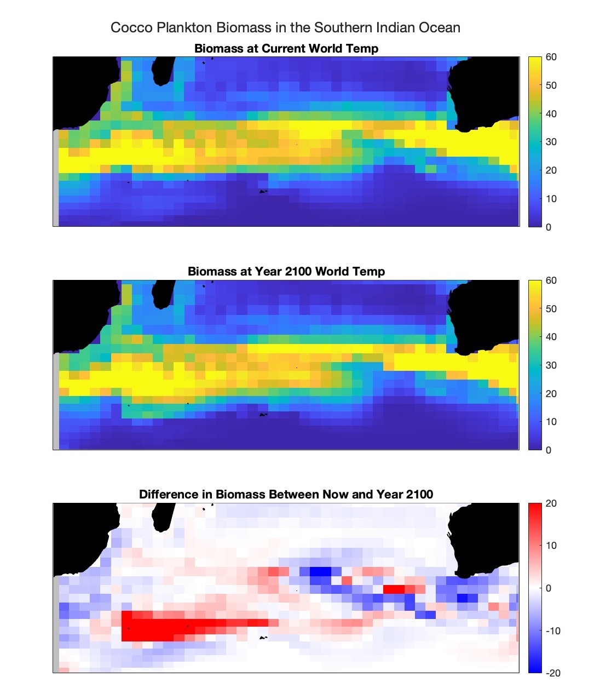
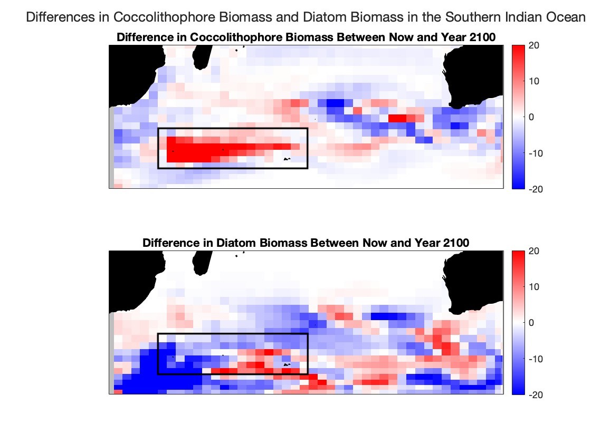
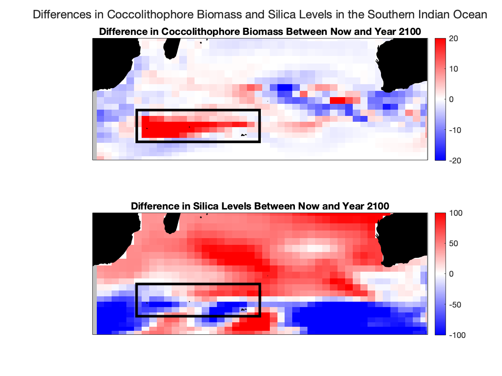

HOME
RESULTS
ALL
GLOBAL
COCCOLITHOPHORES
PICOPLANKTON
ABOUT
CONTACT
COCCOPLANKTON EXPLORATION IN THE SOUTHERN INDIAN OCEAN
RESULTS AND ANALYSIS
How does coccolithophore biomass change over the century?
The map to the right displays the biomass of coccolithophores in the current year (top), the year 2100 (middle), and the differences between these years (bottom). Zooming into the southern Indian ocean, there is extreme patchiness in terms of increases and decreases in biomass throughout the region. There is a prominent patch of an increase in coccolithophore biomass near the coast of Africa at the end of the century, when water temperatures are warmer. This is likely due to
competition structures which are perpetuated by nutrients availability within these smaller regions.
Coccolithophores commonly compete for resources with other phytoplankton taxa, and we can predict which taxa will outcompete the other based on calculating ratios of the available nutrients in a region. Specifically,
a low silicate to nitrate ratio indicates that coccolithophores will outcompete other phytoplankton species,
including one particular threat: diatoms. Diatoms require silica for creating their silica shells that encase and protect them from predators. The data reveals that the silicate to nitrates ratio is 1.03 in this general region. Considering that the global ratio is 1.29, we can see in this tiny region that the average is low.
To visualize the outcome of the competition between coccolithophores and diatoms, I plotted the change in diatom biomass over the next 100 years side-by-side with the change in coccolithophore biomass. In the region where there is a drastic increase in biomass of coccolithophores, there is a corresponding decrease in the biomass of diatoms (the exact location may have shifted slightly due to circulation of ocean waters), which as was discussed above, is likely due to a lack of silica availability that diatoms rely on to grow.
Why don’t blooms occur everywhere?
Different kinds of phytoplankton have different requirements for growth. Coccolithophores are specially adapted to be able to thrive in subtropical areas called “ocean deserts” where nutrients availability is low. Other types of phytoplankton correspondingly struggle to grow in these areas. However, coccolithophores may get outcompeted when nutrients availability is higher and be replaced by phytoplankton types that can grow faster in high-nutrient waters (diatoms are especially good at this). Outside the coccolithophore patch, silica levels are higher, and diatoms are able to outcompete the coccolithophores.
What do these results mean on a global scale?
Coccolithophores are the major planktonic group that are responsible for the production of pelagic calcium carbonate. There are conflicting views about the effects of coccolithophore blooms on the ocean. Although, according to studies by researchers in the field, the short term effect of blooms is negative as they may contribute to global warming. Though this idea is not widely accepted, it may be explained by a higher production of calcium carbonate which drives surface alkalinity (the ability of a solution to neutralize acids) down. When alkalinity is low, carbon dioxide is released back into the atmosphere rather than sinked into the deep ocean. Although, in the long term, a more widely accepted idea is that blooms will actually decrease carbon dioxide levels in the ocean. During calcification (the process by which marine organisms form calcium carbonate), two carbon atoms are taken up and one is trapped in the form of calcium carbonate. The other atom sinks to the deep ocean in the form of a coccolith (an individual plate of calcium carbonate formed by coccolithophores) and becomes a part of the sediment. As a result, coccolithophores act as a sink for emitted carbon dioxide, which mediates the effects of greenhouse gasses on the environment.
Ultimately, coccolithophores help to regulate ocean temperatures by maintaining balance and equilibrium in temperature levels. Coccolithophores are able to thrive in warmer seas and release an organosulfur compound into the air called dimethyl sulfide (DMS). DMS produces thicker clouds which blocks the sun and correspondingly reduces ocean temperatures. Once the oceans cool, the number of coccolithophores correspondingly decreases. As a result, the number of clouds decreases, and temperature is able to rise again. This everlasting cycle consistently balances out temperature, maintaining equilibrium in the environment.



Back to Global Coccolithophore Exploration